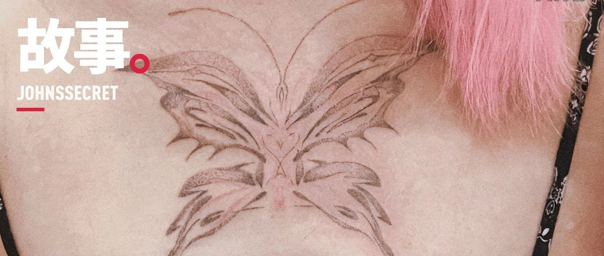

在胸口，长出一只代表重生与美丽的蝴蝶
原创
宛潼
约翰斯库
2023年08月15日 01:03
广东
纹身和名字一样，是个会跟你一辈子的东西。但好在对于姓名我没有选择的权利，而纹身有，可以选择在纹在哪里纹什么图案，更不用家长签字 —— 是我少有对身体的自决权之一。
其实想纹身这件事情很久了，却一直因为怕疼而搁置。相比别人眼中「勇敢」的我来说，这才是我真正需要勇气才敢去做的事情。然而好不容易攒了一点的时候，在海口朋友的纹身工作室里看着机器上不停戳进皮肤的针，立刻泄得一点都不剩。
可是意料之外的事情时有发生，今年因为一些事情让我对性别肯定手术有了空前的渴望。
这是个超级疼的手术，而且做完之后的 7 天我都得躺在床上不能动，靠营养液来维续孱弱的身体。我爸在知道我明确决定要去做这件事情的时候，他不出意料地问出来的第一句话是，你知道这个手术有多痛苦吗？而且一次还不一定能做完，万一以后后悔了怎么办？
我没有反驳。但 8 年的时间过去，我早就知道这是个不能后悔的决定。于是我反问他，「你知道为什么这么痛苦我也要去做吗？」
他沉默了。
所以在纹身时仿佛刺穿心头的痛感冲入神经的时候，我不停地抽烟，然后用这句话来安慰自己：没关系的，既然已经鼓起勇气决定要去做手术了，比起那一天要遭受的痛苦来说，这点短暂的刺痛就不算什么了吧。
至于为什么会正式和我爸争执起这个问题，已经是后话了。
纹身师是我在 Tinder 认识的朋友，叫阿生。她和我一样，大概率也是个老烟鬼了。
阿生和我提起来一个故事，在去年春天的上海，因为她和其她人的努力，他们成为了那时候大学里少有能归家的人。
我那时候觉得她真勇敢。
终于讨论到要扎什么图案的时候，我说想要个蝴蝶。虽然很多人都会把蝴蝶纹在身上，但它对我来说还有其它的意义。跨性别，尤其是跨性别女性们总是会把手术叫做「蝶变」。尽管我不算喜欢这个词，但从蛹到蝶的蜕变，却又真实地触碰到了我们这些在黑暗与痛苦之中拼命扑腾翅膀，努力要成为自己的人 —— 即便这种努力会流不少血。
我给阿生提供了几个关键词，蜕变，独自美丽，爱，温柔和重生。我以为我的屁事太多会让她感觉麻烦，但看到图案与概念阐释的那一瞬间，眼泪又没忍住掉下来了 —— 这就是我见过最好的图案。
就算我知道，我这一辈子都不会拥有那些东西，可是从此，它们会以另一种形式生长在我的胸前，陪我走完生命剩下的日子。
谈到纹哪里的时候，我很快就决定将它扎在胸口。
经常犯纠结症的我，也说不清楚为什么决定纹在这个位置，或许是觉得这是个更好看的位置，尤其是穿吊带或者露肩的时候。
当我把这件事告诉朋友的时候，这个蝴蝶已经在胸前张开了一边的黑色翅膀。但没想到看到图片的她对我问的第一个问题是，「这真的不是画上去的吗？」确认这是真正扎进皮肤的图案之后，她说的第一个词，是勇敢。
「你真的好勇敢啊。我在身上纹了这么多地方，都还不敢扎这里，这里是最痛的地方了，而且你一上来还扎这么大。」
我笑着和阿生分享了这件事。虽说我确实知道这里会比较疼，但我想肯定不会比手术更疼了。
「嗯，你真的很勇敢哦。」
阿生对我说的第一个词，也是勇敢。
我好像太经常听到这个词了。可是那些决定其实是我犹豫了很久很久，才终于迈出去试探的小小一步。而那些真正需要与勇气挂钩的事情，比如表达爱，却在我身上几乎完全地、彻底地丧失了。
我明明是个只愿意呆在自己小小的安全区里，遇到了喜欢的人也会默默把爱吞进心里的无底洞直到耗尽，也只想用逃避来解决自己许许多多人生命题的胆小鬼啊。
进入深夜，阿生手上的针来到胸和肋骨附近的时候，我的痛感明显增加了。
躺在纹身床上的我，烟一根接着一根，想要用尼古丁暂时麻痹着大脑。烟灰顺着手指的抖落滑进发缝中，像是在头顶凃画出一小片粉色的星河。
不抽烟的时候，我的手紧紧地抓着床边的钢条，咬紧嘴唇。我和阿生没有一句对话，安静得出奇。
终于到了休息的间隙，我已经没有力气再走下床，而是直直望着眼前刺眼的白色灯光，忽然看见了未来躺进手术室里的自己。那时候的我会是什么心情？「我终于是一个女孩了」吗？我相信那时候更多的会是平静，就像这时候的我一样。
我攒了好久好久的所谓「勇气」，经历如此多的徘徊、悲伤和苦难，就是为了等待我躺在手术室的那一天。如果灵魂不属于我的身体，身体拒绝表达我的灵魂，我只会抖落无尽的痛苦。
第二天的凌晨 1 点多，第一部分的纹身终于结束。
尽管粉色的部分没有扎完，但看着这只还不完美的蝴蝶，眼泪又开始在眼眶打转。我盘腿坐在阿生家客厅镜子前的地上，难免觉得自己有些矫情。可我又觉得一些让我恐惧和害怕的东西，正在渐渐随着电视里陈绮贞飘落的歌声散去，即便当时已经是深夜，眼前却如同前拉斐尔派的画作一样，鲜艳、明亮，充满了绚烂斑驳的色彩。
我有太多记不清的第一次，什么时候真正意义上开始留长头发，什么时候开始第一次化妆，什么时候知道了自己是一位跨性别女性。我也有很多能够记住的第一次，2017 年 4 月 27 日买了第一条裙子，2022 年 2 月 2 日和父母出柜，2022 年 7 月 13 日向世界出柜。
而在 2023 年的 7 月 19 日，我那微微隆起的胸前，两只黑色的翅膀徐徐张开，长出了一只代表重生与美丽的蝴蝶。
或许有一天，伴随着这只蝴蝶，我也会长大成一个如身旁人眼中那样真正勇敢的人，而不再像现在这样畏缩不前了。
Special Thanks to Ash 阿生
她的 Ins：ashlizi8
修改于